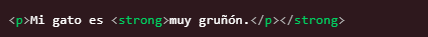
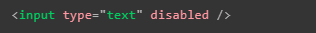
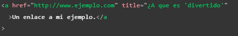
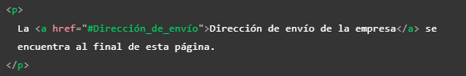
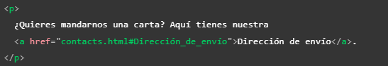

Notas a recordar al utilizar HTML
Algunas de las cosas que es necesario recordar al trabajar la estructura o funcionamiento de una paguina web con HTML son:
-
Lo ideal es confiar en HTML para el contenido tanto como sea posible
-
Una buena practica es tomarse el tiempo de pensar y definir la estructura que tendra la paguina, desde el como se estructurará, conectara por cuantas paguinas estara compuesta, que contenido alvergara, y el como se quiere que se vea entre otros aspectos (siempre es bueno dibujar o plasmar las ideas en borradores o referencias visuales)
-
Lo mejor para una paguina es incluir contenido de terceros solo cuando es encesario, ya se por temás de derechos de autor, licencias o bulnerabilidades aprobechables por terceros mal intencionados
-
Si es posible utilizar un servicio HTTPS para nuestra paguina, tener presente la seguridad de esta siempre debe ser primordial
-
El anidamiento de las etiquetas debe de hacerse de forma correcta para evitar mal funcionamiento de los elementos, es decir el primer elementos en abrirse es el ultimo en cerrarse, y biceversa, por lo tanto nunca hay que mesclar el inicio y final de las etiquetas como se ve en el ejemplo, las etiquetas deben estar claramante dentro o fuera una de otras
 -
Si escirbimos "lorem" en alguna etiqueta de texto emergere una recomendación del editor de texto, selecionarla se plasmara en la etiqueta un texto en latin, su unica función es actuar como un texto de relleno para que podamos emular el contenido de la paguina mientras esta es desarrollada
-
Es posible aplicar más de una clase a los elementos HTML utilizando el atributo "class", para hacerlo unicamente basta con dejar un espacio entre los nombres de las clases.
-
Como pequeño recorrdatorio si se unde "alt+z" el codigo extenso mostrado en el editor de texto en vez de extenderse hacia la derecha de forma indefinida, se replegara y se alineara dentro de la pantalla
-
Los atributos booleanos son aquellos que unicamnte tienen un valor, generamente es el mismo que el nombre del atributo por lo que estos atributos se implementan sin valor alguno
 -
Se puede usar libre mente ya sea comillas dobles o simples ya que estas son equivalentes, lo que nunca debe pasar es que se mesclen en un mismo elemento
Tambien se puede usar un tipo de comillas para los valores de los atributos y otro en el contenido.
Si se necesita incluir el mismo tipo de comillas en el contenido es necesario utilizar entidades HTML para estas.
-
Dentro del elemento "head" no solo se definen los metadatos tambien se puede encotrar la descripción de la paguina para los moteres de busqueda
-
Los comentarios dentro de HTML se aperturan con "<!--" y se culminan con "-->"
-
El elemento "nav" de la barra de navegación se puede incluir como parte del encabezado o se puede manejar como un elemento independiente
-
El elemento "main" solo deberia ser usado una vez por paguina ya que representa el contenido exclusivo de esta, tampoco deberia estar anidado dentro de otros elementos
-
No utilizar demaciodos contenedores "div" ya que al no poseer un significado semantico puden ocacionar un codigo deficil de actualizar y mantener, lo recomendable es que solo se use si no existe una mejor opción para ese caso de uso
-
Solo aplicar un unico "h1" por paguina
-
No usar más de tres niveles de titulos en un documento, si son necesarios usar más lo recomedable es separar el xontenido en diferentes paguinas
-
Actualmente no es muy recomendable usar los elementos "b", "i" y "u" ya que al no aportan semantica, almenos que se de el caso de que se necesite transmitir el significado tradicional de las negritas, en este caso si no hay otro elemento mejor para hacer esto seria correcto su uso
Recordemos sus usos tradicionales:
<i> se usa para transmitir el significado que tradicionalmente transmite la itálica: extranjerismos, clasificaciones taxonómicas, conceptos técnicos, un pensamiento...
<b> se usa para transmitir el significado que tradicionalmente transmite la negrita: palabras clave, nombres de productos, frases principales...
<u> se usa para transmitir el significado que tradicionalmente conlleva el subrayado: nombres propios, errores ortográficos...
Nota: normalmete el subrayado se asocia con los hipervinculos por lo que se recomienda puntualizar su uso o cambiar los estilos con CSS.
-
Incluso los nombres de las imagenes son tomados en cuenta para el SEO (posicionamiento en los buscadores) de la paguina, por eso lo mejor es aplicar nombres descriptivos en estas
-
Se puede incluir una imagen usando la URL absoluta o la URL relitiva, sin embargo aplicar la URL absoluta es desperdiciar tiempo y recursos ya que el navegador tiene que recorrer un camino más largo para encontrar la imgen, por lo tanto la solución más eficiente es usar la ruta relativa
-
Si se adjunta una imagen de la que no se sea el propietario siempre tener presente:
Tener un permiso escrito explicito del dueño de la imagen
Se tetengan suficientes pruebas de que la imagen es de dominio público
-
Recordar el uso del atributo "alt"(texto alternativo) en los elementos "img" ya que esto se mostrara en los casos en que la imagen no pueda ser mostrada al usuario o se use un leector de pantalla
-
No solo es posible es utilizar los enlaces para apuntar a un documento o archivo, tambien podemos dirigirlos a alguna sección o elemento en espesifico de la paguina, para esto unicamente se necesita hacer referencia al atributo "id" del elemento en cestión, como se puede ver en el ejemplo
Tambien podemos hacer esto desde otra paguina, incluyendo el "id" al final de la ruta a la paguina:
 -
En caso de que se asigne un URL en el que se defina en que carpeta ingresar pero no a que archivo acceder la mayoria de los servidores buscan por defecto los archivos index cuando no se espesifica uno
-
Los motores de busqueda tambien se fijan en el texto de los enlaces por lo tanto es bueno utilizar palabras claves para describirlos, esta tambien ayuda a los usuarios que ingresen en la paguina
-
No escribir "enlace a" o "link" por que los leectores de pantalla ya anuncian los enlaces, y los usuarios comunes pueden distingirlos por sus estilos, por lo tanto es redundante
Incluir el contenido de reserva en los elemetos de video
Tambien es recomendable incluir más de un formato de video para asegurar la compativilidad con diversos navegadores
-
Al uzar un elemento "iframe" es recomendable establecer el atributo "src" con JavaScript, para que primero se cargue nuestra paguina y luego el contenido incrustado, mejorando los tiempos de carga y la usabilidad
-
Siempre que se embebe contenido en un iframe hacerlo desde un protocolo HTTPS ya que este elemento puede ser un punto de ataque mal intencionados
-
Tambien es esencial siempre usar el atributo "sandbox" en el caso de usar un iframe ya que de ese modo se limitan las opcines que pudiese tener un ataque malicioso, del mismo modo una nota importante es que nunca debe agregar tanto "allow-scripts" como "allow-same-origin" a su atributo "sandbox"; en ese caso, el contenido incrustado podría pasar por alto la misma política de seguridad de origen que impide que los sitios ejecuten scripts y usar JavaScript para desactivar sandboxing por completo
-
Recordar que un atributo indispensable para enviar los datos de un formulario es el atributo "name" ua que los datos son enviados en cadenas "clave/valor"
-
No es recomendable anidar un formulario dentro de otro ya que est poede ocacionar comportamientos impredesibles, lo que si se puede es usar elementos de formularios que se encuentren fuera de este, todo esto atrabes del uso del atributo "for"
- Es una practica comun usar listas o "div" para delimitar los elemenos de los formularios y aplicar estilos CSS más facilemnte, tambien en casos más complejos se usan elementos "section" y "fieldset" para agrupar en base a la funcionalidad de los elemetos